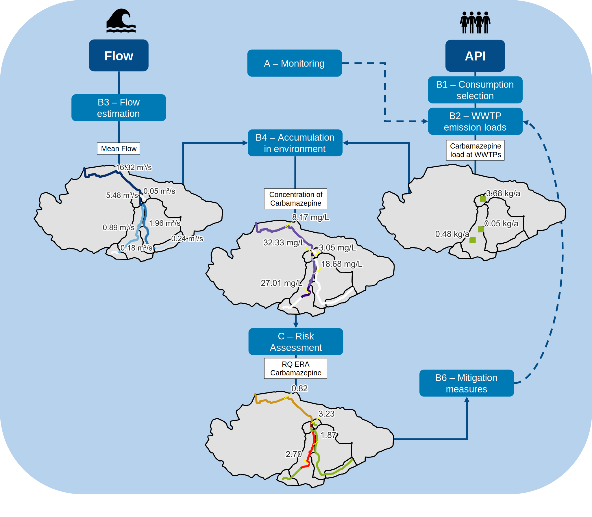

Introduction
The APRIORA plugin is a QGIS tool divided in two groups:
The first group of tools is designed to estimate flow in normal and low condition in a catchment, while the second one calculate concentration of different Active Pharmaceutical Ingredients (APIs) and perform the risk assessment in each river section.
For more information, check the project website.
Getting Started
Please find instructions on how to install the plugin in the Installation for Windows section.
Support, contributing and testing
Please contribute using Github (insert link). Create a branch, add commits and open a pull request.
Reporting bugs
If you find a bug in APRIORA plugin, please open a new issue (insert link) and tag it “bug”.
Suggesting improvements
If you want to suggest a new feature or an improvement of a current feature, you can submit this on the issue tracker (insert link) and tag it “improvement”.
Latest changhes
This section contains the most recent changes and updates to the plugin.
v.0.6.1: Fixed connection between PNEC custom table and Risk assessment tool.
v.0.6: Risk assessment tool added to the set of available tools.
v.0.5.1: Added feature to customize input data of Consumption selection.
v.0.5: Accumulation tool developed.
v.0.4: API Emission set of tools is created. Consumption selection and Emission Loads developed.
v.0.3: Adaptation for transferability of Contributing area of gauging station, Calculate geofactors, Flow estimation to the new algorithm developed in v.0.3
v.0.2: Fix River Network is developed for transferability of Flow estimation in different catchments.
v.0.1: Flow estimation set of tools developed (Contributing area of gauging station, Calculate geofactors, Flow estimation), but working only for the German case study (Warnow).